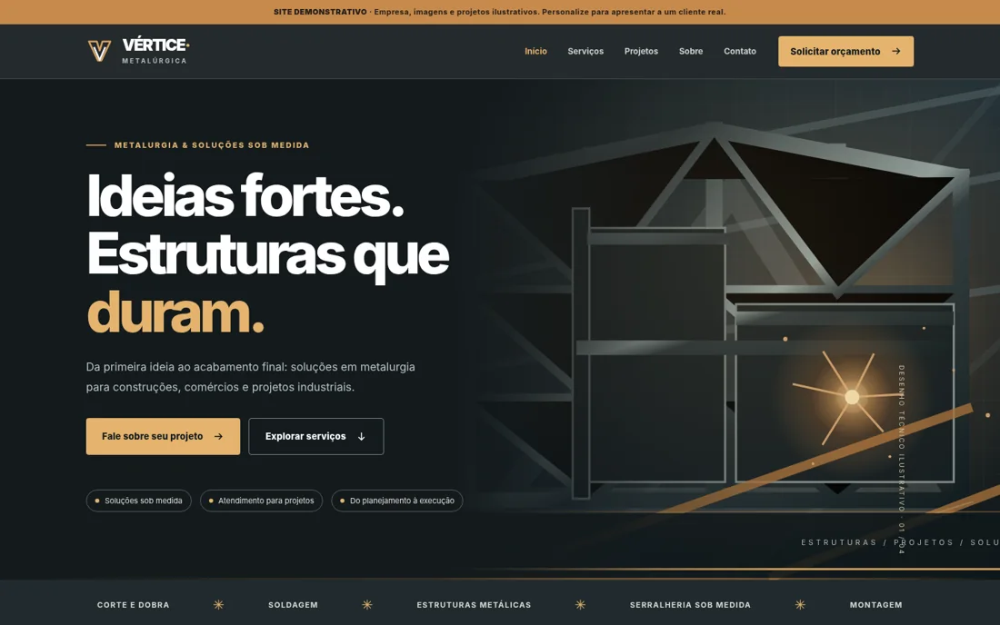
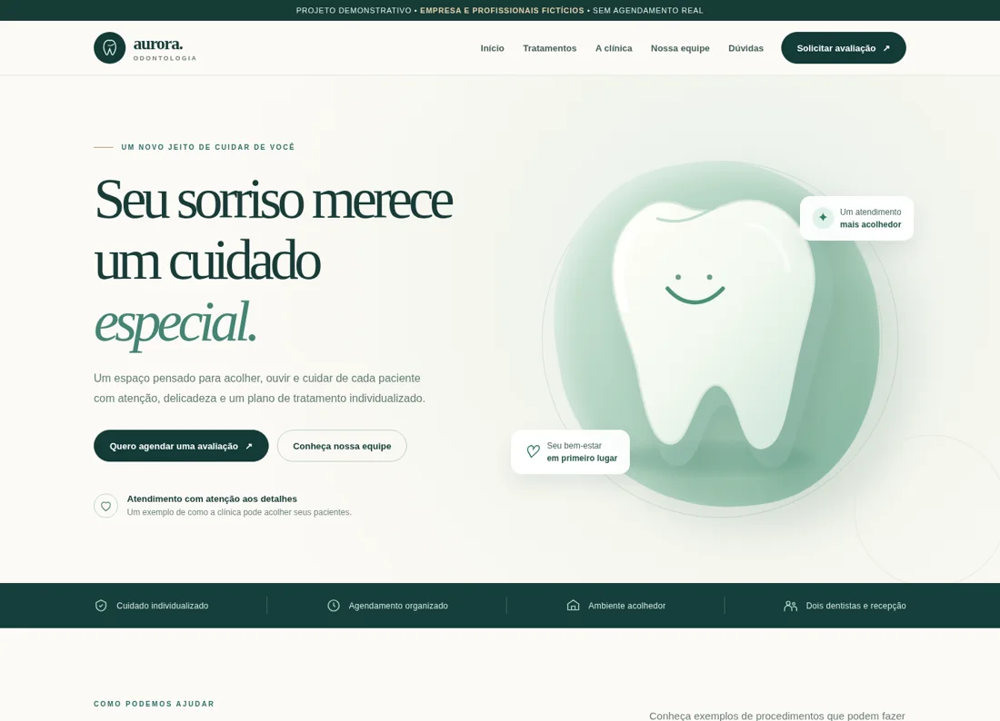

DESIGNLogo final
Helly Viagens
Uma identidade em preto e dourado para um serviço de transporte.
Sites e landing pages que apresentam sua ideia.
Crio sites, identidades visuais e soluções digitais para pessoas e negócios. De Aracati, Ceará, conecto criatividade e tecnologia para transformar ideias em experiências claras, funcionais e com personalidade.
01QUEM ESTÁ POR TRÁS
Sou Zaion Araújo, estudante de Ciência da Computação e criador da ZAION Soluções Digitais.
Uno design, desenvolvimento e organização para ajudar pessoas e negócios a tirar ideias do papel.
Uma identidade bem apresentada, um site claro ou uma solução que facilita a rotina: o ponto de partida é entender o que o seu projeto precisa.
Vamos conversar sobre seu projetoCOMO EU TRABALHO
Um processo simples para alinhar a ideia, encontrar o formato certo e trabalhar os detalhes.
Conversamos sobre o que você precisa, para quem é o projeto e o que deve ficar claro na entrega.
Organizo o conteúdo e conecto design e funcionalidade à necessidade do projeto.
Ajusto os detalhes de apresentação e uso para construir uma solução que faça sentido para você.
02TRABALHOS EM DESTAQUE
Marcas, propostas e conceitos web. Cada trabalho vem com seu contexto e seu estágio de desenvolvimento.
Uma identidade em preto e dourado para um serviço de transporte.
Um estudo de marca delicado para um consultório odontológico.

Um conceito de site institucional com apresentação clara de serviços industriais.

Uma landing page conceitual para apresentar um consultório com clareza.
Nenhum projeto nesta seleção.
Trabalhos identificados como proposta ou demonstração são estudos criativos. Não representam, por si só, contratação ou publicação comercial.
03FERRAMENTAS & ÁREAS
Desenvolvimento, design digital e organização se encontram nas soluções que eu crio.
Explore os projetos e serviços relacionados a cada área.
04CÓDIGO EM PERSPECTIVA
Uma visão dos meus repositórios públicos e das linguagens presentes no código. Explore os dados ou abra os projetos na fonte.
Repositórios públicos de Zaion Araújo.
05O QUE EU FAÇO
De uma presença digital bem cuidada a uma ferramenta para organizar a rotina, podemos encontrar o formato que seu projeto pede.
Páginas claras e responsivas para apresentar seus serviços e facilitar o contato.
Conversar sobre este serviçoUma marca com personalidade, feita para conversar com o seu negócio.
Conversar sobre este serviçoPlanilhas personalizadas para organizar informações e simplificar tarefas.
Conversar sobre este serviçoMateriais profissionais com conteúdo bem organizado e apresentação cuidadosa.
Conversar sobre este serviçoPeças visuais que comunicam sua ideia com clareza e consistência.
Conversar sobre este serviçoApresentações práticas para produtos, serviços e estabelecimentos.
Conversar sobre este serviçoTradução e revisão de materiais com atenção ao contexto e à clareza.
Conversar sobre este serviçoVamos entender sua necessidade e pensar em uma solução digital sob medida.
Conversar sobre este serviço06VAMOS CONVERSAR
Conte o que você quer criar e para quem é a ideia. Vamos conversar sobre um caminho possível e um orçamento.
Aracati, Ceará · Brasil
Desenvolvimento web · Design digital
Estudante de Ciência da Computação e criador da ZAION Soluções Digitais. Atua com sites, identidades visuais e soluções digitais para pessoas e negócios.
Estudante de Ciência da Computação
HTML · CSS · JavaScript · Python · Java · Git / GitHub · Design Digital
Sites e landing pages; identidade visual; planilhas; documentos; artes digitais; catálogos; tradução inglês/português; soluções personalizadas.
Uma identidade em preto e dourado para um serviço de transporte.
Um estudo de marca delicado para um consultório odontológico.
Um conceito de site institucional com apresentação clara de serviços industriais.
Uma landing page conceitual para apresentar um consultório com clareza.